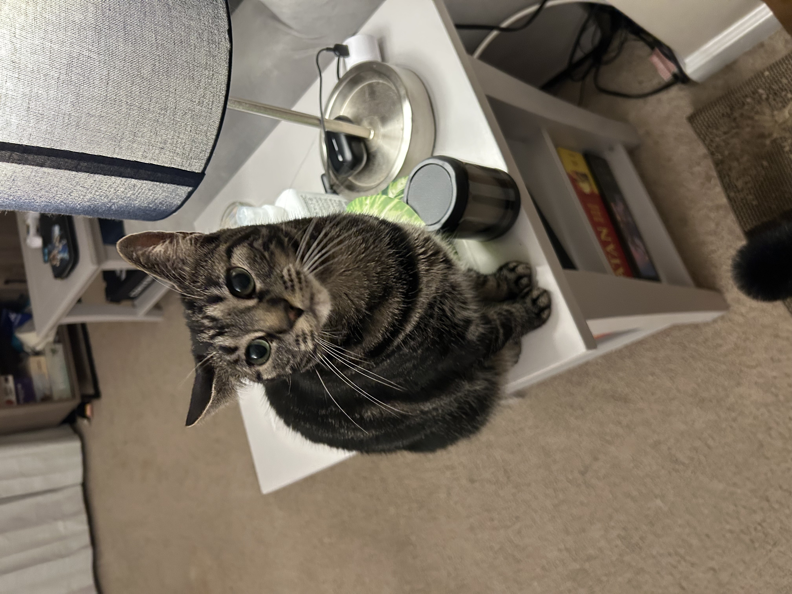
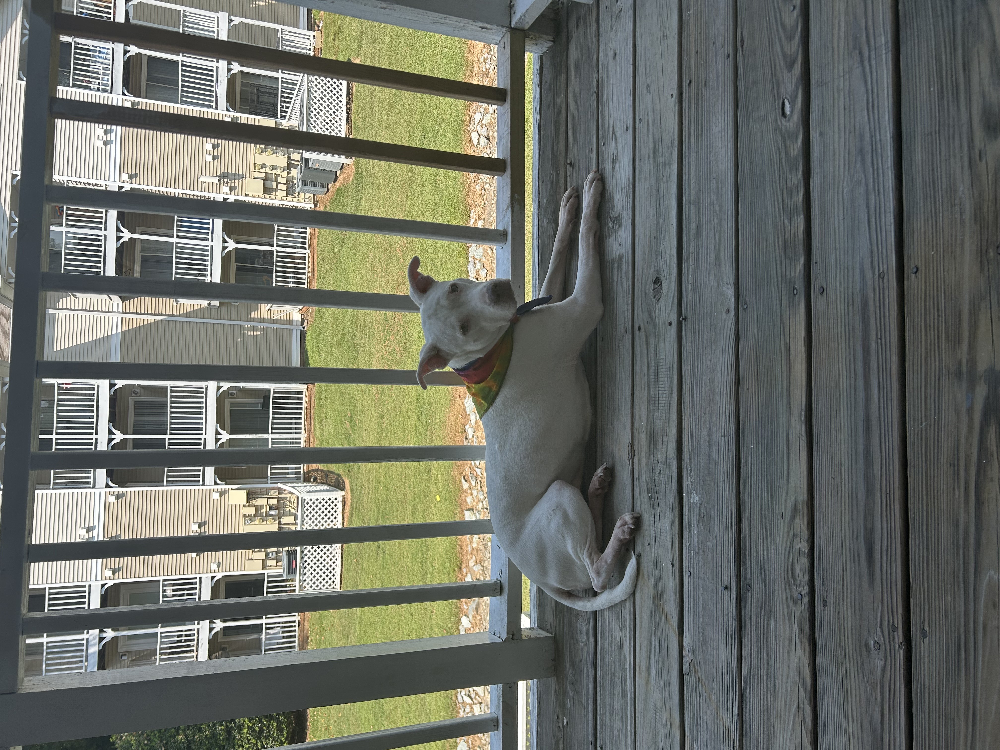

Born and raised in Mississippi, I developed an interest in tech and computers when I was 10 and got my first desktop. I also started playing video games when my grandpa got me a Sega Genesis and a Nintendo 64. Now, video games and PC games are my main hobby outside of work.
I'm also interested in physical fitness and trying new forms of exercise. As my resume states, I previously worked as a spin instructor after falling in love with it. I've also tried various studio franchies such as Solidcore and Orangetheory, and I also like running when the weather is nice enough.
Other things I'm fond of are finding new and local coffee spots wherever I go, board games and DnD, and learning how to bake new things. I'm also an animal lover and have two pets of my own! My dog is named Sansa, and my cat is Arya. And yes, they are named after the respective Game of Thrones sisters!
